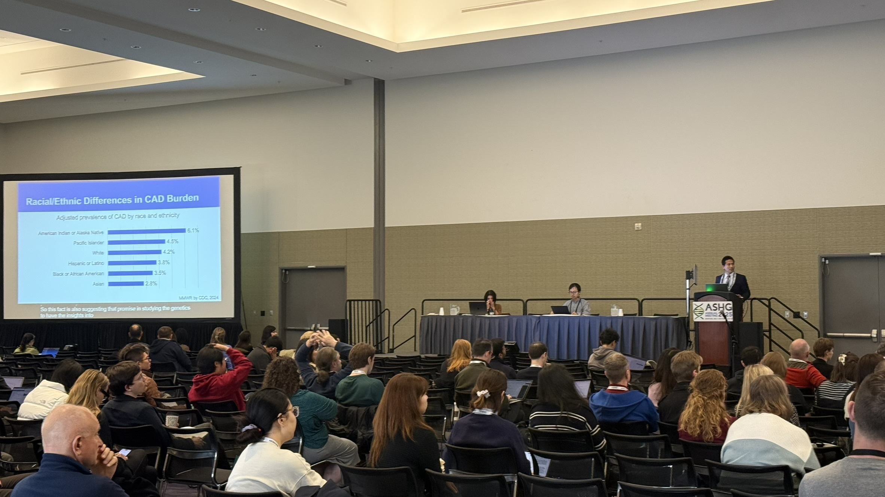
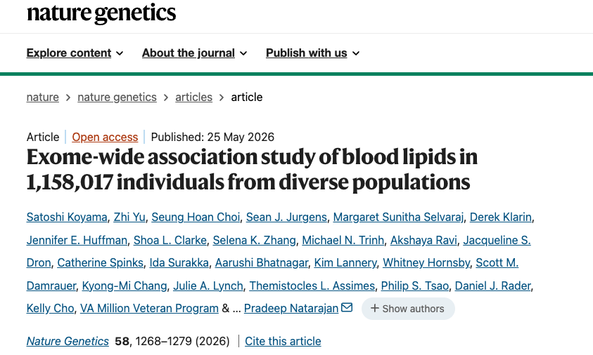
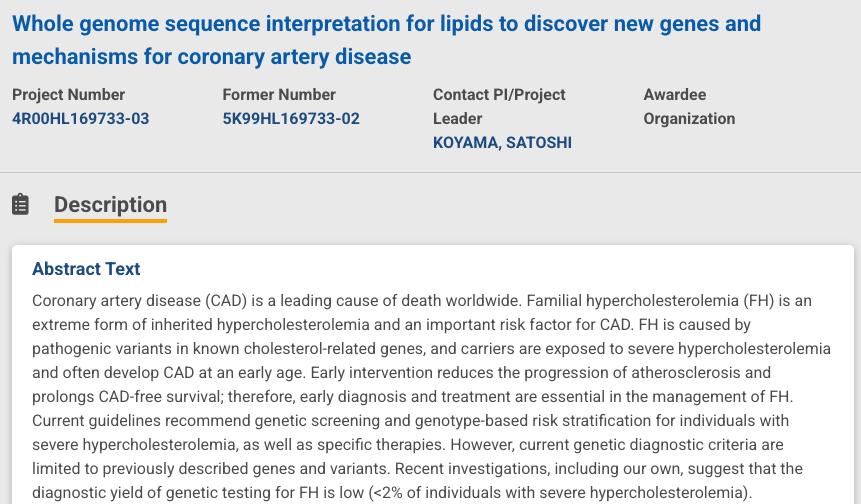
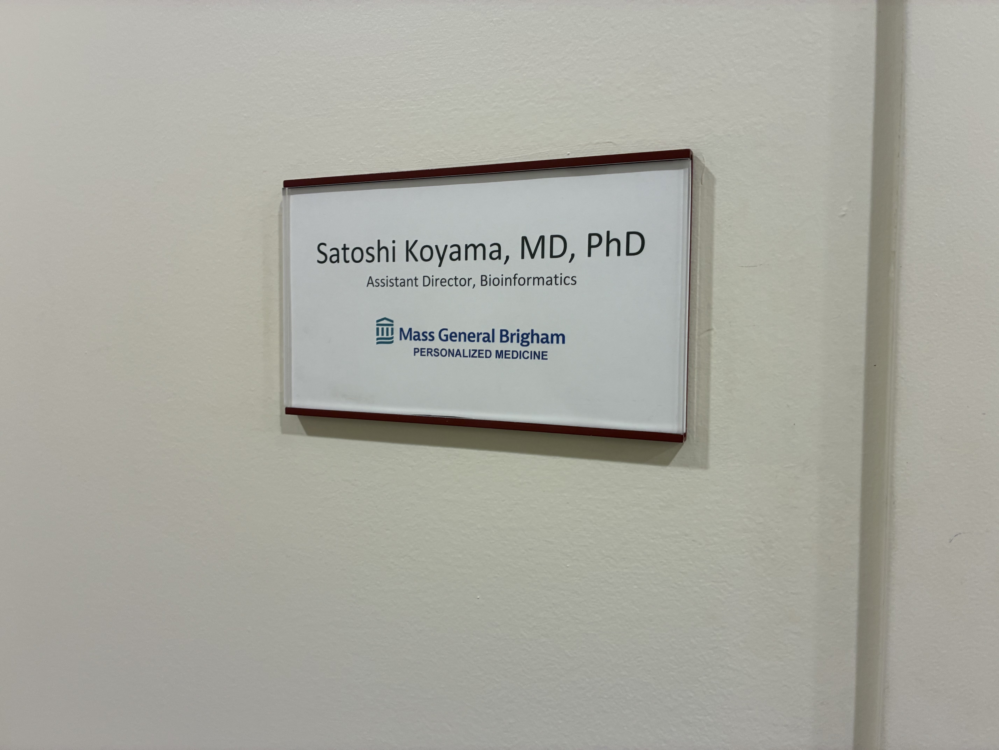

Satoshi presented the latest CAD GWAS results at ASHG Boston.
Human Genetics / Disease Biology / Translational Genomics
We study how genetic variation shapes susceptibility, progression, and treatment response in human disease, integrating large-scale genomics with clinical insight.
News

New publication in Nature Genetics: "Exome-wide association study of blood lipids in 1,158,017 individuals from diverse populations."

The grant support for the lab's research program from NHLBI is activated!

Satoshi presented the latest CAD GWAS results at ASHG Boston.

Koyama Lab launched!
Programs
We use population-scale genomic and health data to discover DNA changes that influence human disease. Through genome-wide association studies (GWAS), rare variant association studies (RVAS), and biobank-scale analyses, we identify variants, genes, and biological pathways that contribute to disease risk. Our goal is to move beyond statistical associations and understand how genetic signals point to disease mechanisms, molecular biology, and potential opportunities for prevention or treatment.
We translate genetic discoveries into approaches that can improve prevention and clinical care. Our work develops polygenic risk scores (PRS), interprets pathogenic variants, and integrates genetic information with clinical data to identify individuals at higher risk and understand differences in disease biology. By connecting genomic insight with patient-centered prevention, we aim to make genetic information more useful for patients, clinicians, and health systems.
People
Principal Investigator
12/2022-Present
Clinical Fellow, Massachusetts General Hospital
04/2024-Present
Postdoctoral Fellow, Broad Institute
06/2024-Present
Clinical Fellow, Massachusetts General Hospital
04/2023-Present
Undergraduate Student, Massachusetts Institute of Technology
07/2021-Present
Undergraduate Student, Harvard University
11/2025-Present
Master's Student, Harvard T.H. Chan School of Public Health
01/2023-Present
Medical Student, Harvard Medical School
Former lab members will be listed here.
Publications
Koyama et al., Nature Genetics
Koyama et al., Nature Communications
Koyama*, Liu*, Koike* et al., Nature Genetics
Koyama et al., Nature Genetics
Resources
Genetic Association
Summary statistics from an exome-wide association study of blood lipids in over one million individuals.
Genetic Association
Summary statistics from phenome-wide GWAS and RVAS analyses in the MGB Biobank.
Genetic Association / Fine-mapping Results
Summary statistics from quantitative trait GWAS in Biobank Japan and statistical fine-mapping results.
Genetic Association / Polygenic Risk Score
Summary statistics from coronary artery disease GWAS in Biobank Japan and a derived polygenic risk score.
Contact
Address: 65 Landsdowne Street, Room 302, Cambridge, MA 02139
Phone: 617-768-8490 • Fax: 617-768-8510
Address: 75 Ames Street, Room 10007, Cambridge, MA 02142
Phone: 617-714-7000
Get in touch
Please contact us about academic and industry collaborations or opportunities for trainees.